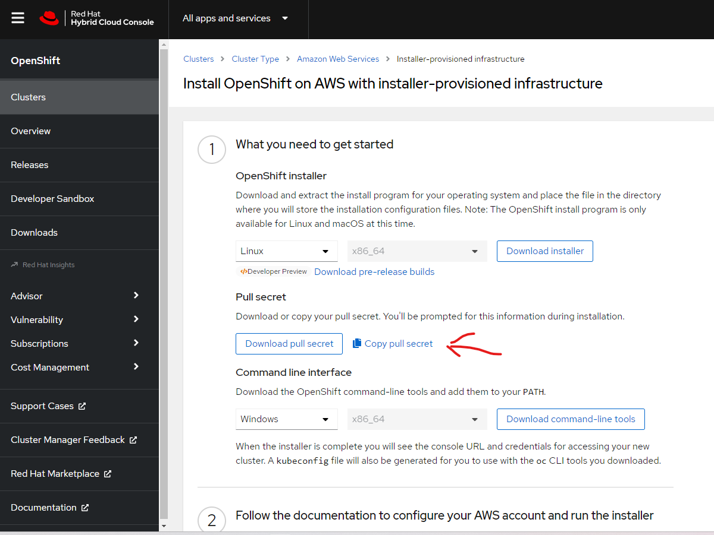
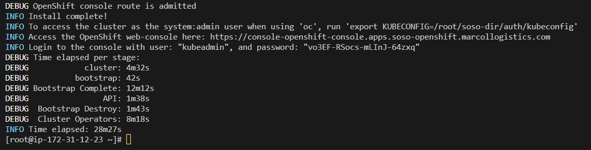

What's Red Hat OpenShift
Red Hat OpenShift, the industry's leading hybrid cloud application platform powered by Kubernetes, brings together tested and trusted services to reduce the friction of developing, modernizing, deploying, running, and managing applications. See official link: Openshift
Getting Started - Steps
- Signup/signin to Openshift account: See-Link
- Navigate to: Clusters -> Cluster Type -> Amazon Web Services -> Installer-provisioned infrastructure 
Install OpenShift on AWS
AWS Openshift installation Link: See-Link There are Two Cluster-Setup options to choose: a customized cluster or quickly install.
- Install the Openshift installer and client on your local computer.
- Move that file to your remote linux machine. You're see the client and installer.
-
Extract the installer and client:
tar xvf openshift-install-linux.tar.gztar xvf openshift-client-linux.tar.gz -
Move the oc, kubectl and installer to usr/bin directoory
sudo mv oc /usr/local/bin/ sudo mv kubectl /usr/local/bin/ sudo cp openshift-install /usr/local/bin/ which openshift-install oc help -
Copy the secret content and paste in a file. This secret is from the redhad account, used to Map the AWS Cluster with the redHat account.
-
In the AWS Console, setup the following:
- Route53 public Hoster Zone
- Add OpenShift port 6443 to instance security groups
- Create
- Create Access and Secret Keys for the Root-user and configure aws
aws configure
- Create Access and Secret Keys for the Root-user and configure aws
-
Create an SSH Key in the root directory
[root@ip-172-31-12-23 ~]# ssh-keygen -t rsa -b 4096 -N '' -f id_rsa -
Evaluate and add to root
[root@ip-172-31-12-23 ~]# eval "$(ssh-agent -s)" [root@ip-172-31-12-23 ~]# ssh-add /root/id_rsa- make a new directory for the installation, mine is soso-dirmkdir soso-dir/ -
Now install Openshift
./openshift-install create cluster --dir /root/soso-dir/ --log-level debug
After installation, you should have your results as seen in the below image: 
Cat and export the konfig file
cat soso-dir/auth/kubeconfig
export KUBECONFIG=/root/soso-dir/auth/kubeconfig
oc whoami
### Destroy the cluster
./openshift-install destroy cluster --dir /root/soso-dir/ --log-level debug
OR OR OR OR OR
-
install Openshift using the config, so you can customize. A prompt will begin. The last prompt will be the secret Copy and paste the secret characters that we had saved earlier.
openshift-install create install-config
-
Copy the install-config.yaml to install-config.yaml.bak
cp install-config.yaml install-config.yaml.bakvi install-config.yaml.bak
-
paste the below content in the file. edit the file to suite ur options.
apiVersion: v1
baseDomain: marcollogistics.com
controlPlane:
hyperthreading: Enabled
name: master
platform:
aws:
zones:
- us-east-1a
#- us-east-1b
#- us-east-1c
rootVolume:
size: 100
type: gp2
type: m4.xlarge
replicas: 3
compute:
- hyperthreading: Enabled
name: worker
platform:
aws:
zones:
- us-east-1a
#- us-east-1b
#- us-east-1c
rootVolume:
size: 100
type: gp2
type: m4.xlarge
replicas: 1
metadata:
name: openshift
networking:
clusterNetwork:
- cidr: 10.128.0.0/14
hostPrefix: 23
machineNetwork:
- cidr: 192.168.0.0/20
networkType: OpenShiftSDN
serviceNetwork:
- 172.30.0.0/16
platform:
aws:
region: us-east-1
userTags:
adminContact: Collins
costCenter: 123
email: cafanwi@sosotechnologies.com
publish: External
pullSecret: ''
sshKey:
SEE MY workflow process
[ec2-user@ip-172-31-12-23 s]$ ls
openshift-install-linux.tar.gz README.md
[ec2-user@ip-172-31-12-23 s]$ tar xvf openshift-install-linux.tar.gz
README.md
openshift-install
[ec2-user@ip-172-31-12-23 s]$ ls
openshift-install openshift-install-linux.tar.gz README.md
[ec2-user@ip-172-31-12-23 s]$ ls
openshift-client-linux.tar.gz openshift-install openshift-install-linux.tar.gz README.md
[ec2-user@ip-172-31-12-23 s]$ tar xvf openshift-client-linux.tar.gz
README.md
oc
kubectl
[ec2-user@ip-172-31-12-23 s]$ ls
kubectl oc openshift-client-linux.tar.gz openshift-install openshift-install-linux.tar.gz README.md
[ec2-user@ip-172-31-12-23 s]$
AWS Openshift installation Link: See-Link